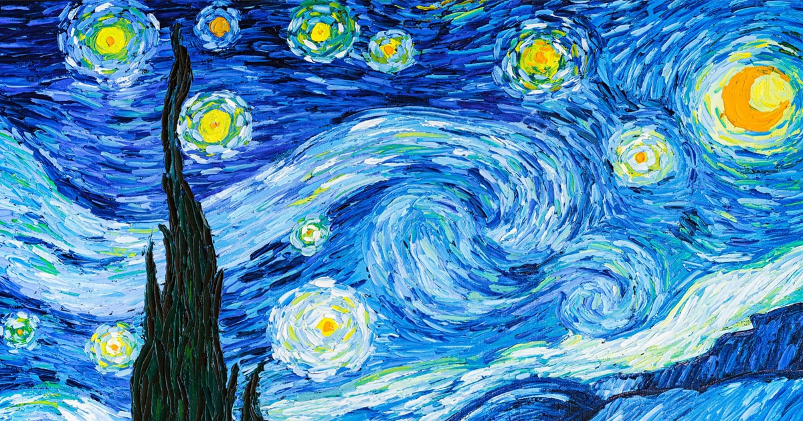

About Me
Hello! My name is Anushree Neupane. I am a Grade 11 student interested in art and technology.
My Education
I am currently studying in Grade 11.
Hello! Welcome to my HTML portfolio.
Hello! My name is Anushree Neupane. I am a Grade 11 student interested in art and technology.
I am currently studying in Grade 11.
I am interested in programming and I enjoy creative designing.
I have skills in painting and sketching, and problem-solving. I also enjoy learning new technologies.
My hobbies include painting and sketching, listening to music, watching movies, cinematograpgy, designing, learning about computers and spending time with friends.
My favorite hobby is painting and learing new things that associate with my interests.

I believe that learning something new every day helps me grow.
I have started learning programming because I want to build my skills for the future.
I no longer want to
avoid difficult programming topics.
Instead, I want to understand them step by step.
Water is H2O and a square can be represented as x2.
Learning technology allows us to turn our ideas into useful solutions.